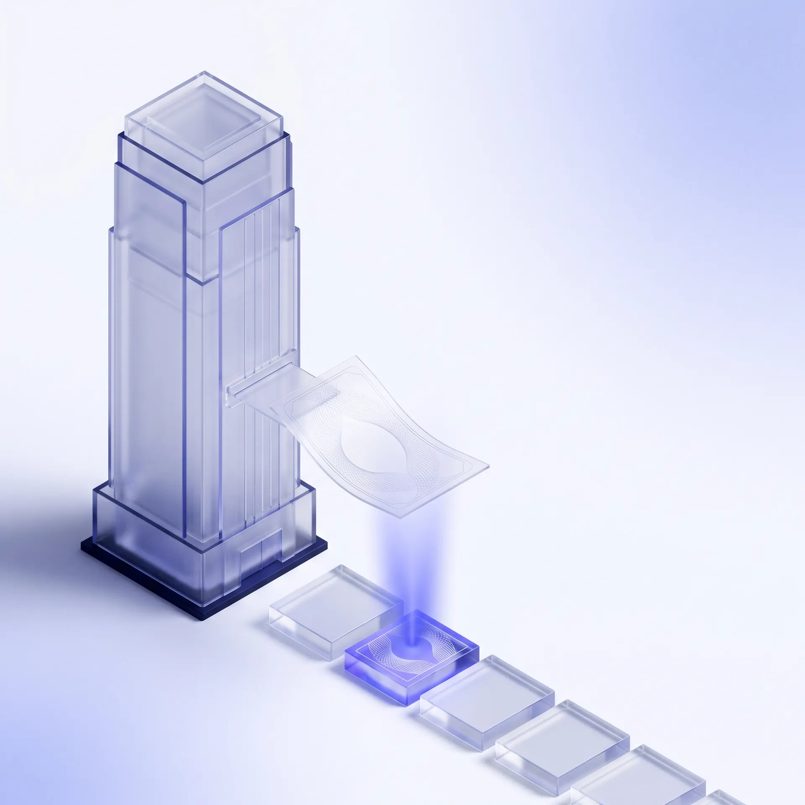
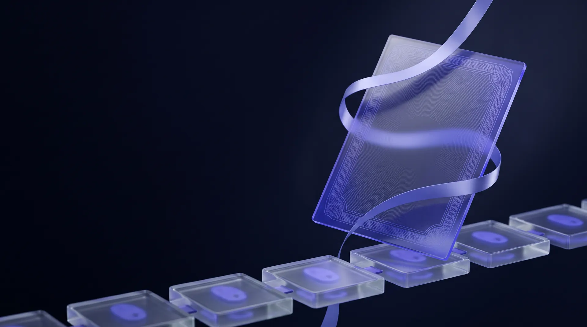
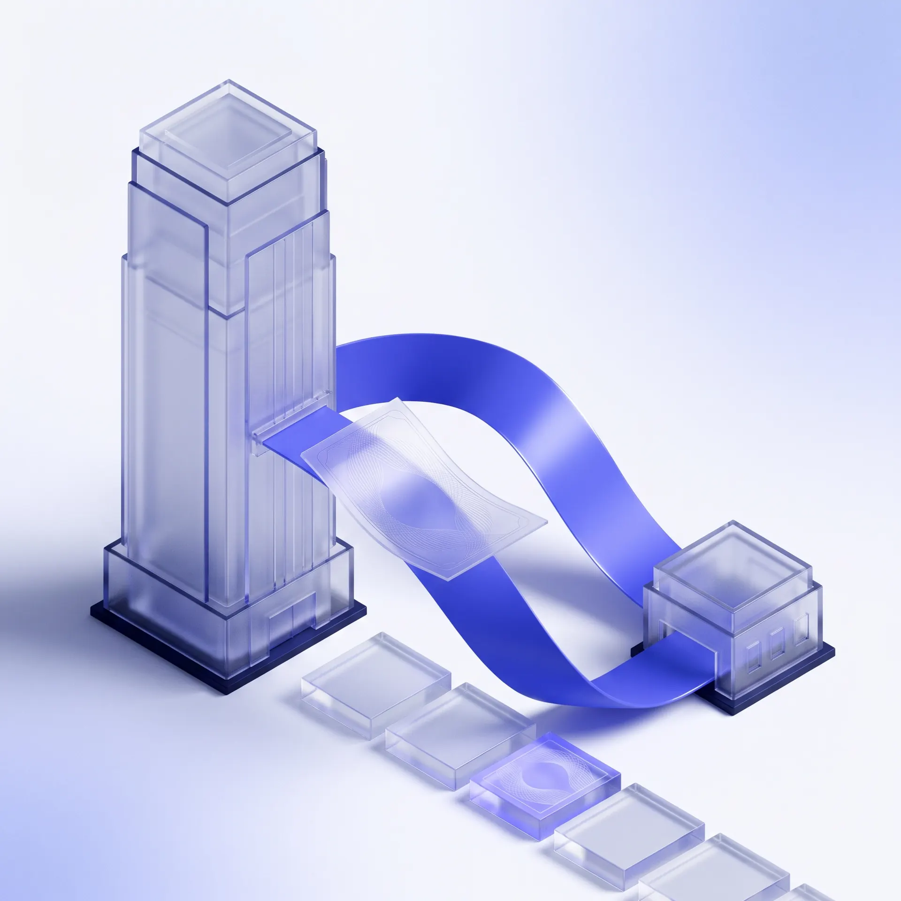
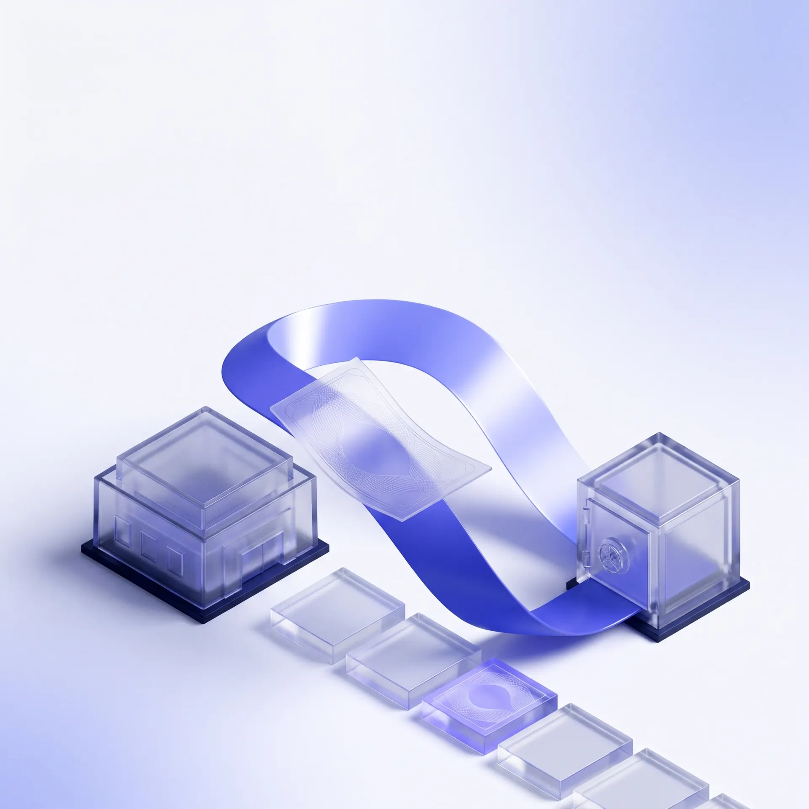
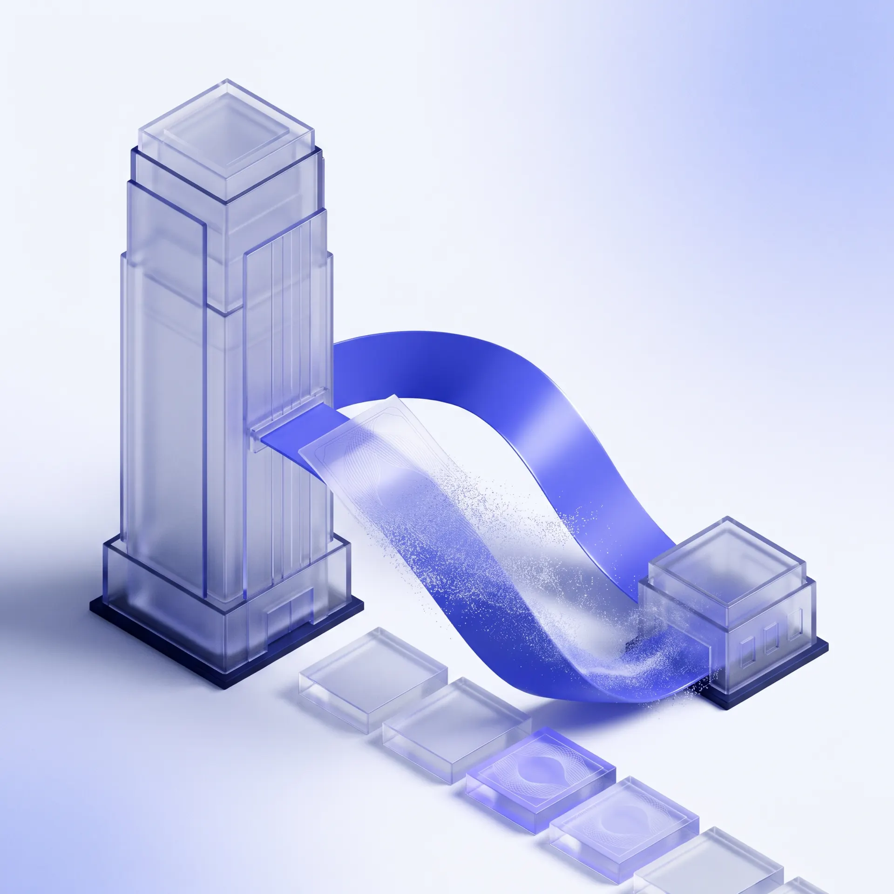
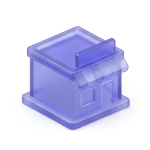
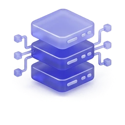
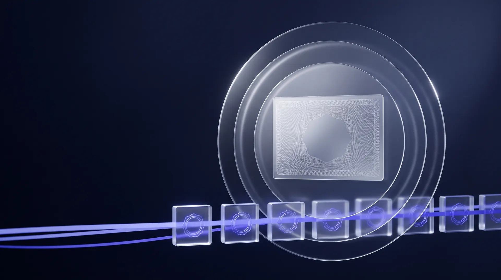

Покупатель подтверждает счёт
Покупатель подтверждает поставщика, сумму и срок оплаты. NEVO сводит всё это в цифровой платёжный вексель (DPN) и выпускает его на поставщика.

NEVO превращает счёт, подтверждённый покупателем, в цифровой платёжный вексель (DPN). После проверки и на согласованных условиях INORI может заплатить поставщику раньше, а покупатель сохраняет изначальную дату оплаты.
Цифровой платёжный вексель (DPN) создаётся в момент, когда покупатель подтверждает счёт поставщика. В нём одобренный платёж собран в одну запись, которую видят покупатель, поставщик и INORI.
У каждого DPN есть серийный номер, юридические названия и регистрационные номера покупателя и поставщика, сумма в шекелях, время выпуска, срок оплаты, текущий владелец и статус.
При споре DPN может получить статус спорного или замороженного, и ничего не происходит, пока спор не разрешён.

Покупатель подтверждает поставщика, сумму и срок оплаты. NEVO сводит всё это в цифровой платёжный вексель (DPN) и выпускает его на поставщика.

Можно держать DPN до срока оплаты, а можно попросить INORI заплатить раньше. Подтверждённый счёт ещё не означает одобренное финансирование.

INORI рассматривает заявку. Если она одобрена и поставщик принимает условия, INORI платит банковским переводом, проверяет банковское подтверждение, и DPN переходит к INORI.

В изначальную дату покупатель платит тому, кто в этот момент владеет DPN. После сверки платежа DPN получает статус погашенного.
Покупатель подтверждает счёт. Поставщик может запросить досрочную оплату, а в срок покупатель платит тому, кто владеет DPN.

Поставщик может и сам запросить финансирование под активный DPN, который ему принадлежит и подходит под условия. Другая сторона должна дать согласие, а INORI проверяет заявку до перевода денег.

Подтверждения, владение, этапы финансирования и подтверждения оплаты хранятся вместе, от первого одобрения до последнего платежа.
Компании работают в одном портале: подтверждают счета, выпускают DPN, запрашивают факторинг и следят за тем, что должно быть оплачено, что оплачено и что погашено.

SORA Nexus на базе Hyperledger Iroha v3 записывает каждое изменение статуса и владельца DPN. Платежи INORI и покупателя проходят обычными банковскими переводами вне блокчейна, а подтверждения потом записываются и сверяются в NEVO.
Сейчас регистрация доступна только израильским компаниям с ограниченной ответственностью (Ltd).
Одобренный аккаунт или подтверждённый счёт не гарантируют финансирование. INORI рассматривает каждую заявку и согласует с вами сумму, комиссии и условия.
Всё начинается с покупателя. Он подтверждает счёт, поставщик может запросить досрочную оплату, а в срок покупатель платит тому, кто в этот момент владеет обязательством. В NEVO это обязательство и право владения им записываются как DPN.
Нет. Покупатель платит в изначальный срок. Если DPN перешёл к INORI, покупатель просто платит INORI вместо поставщика, на условиях сделки.
Вовсе нет. Поставщик может запросить финансирование или просто дождаться срока. Любое финансирование зависит от соответствия критериям, проверки, одобрения и согласованных условий.
Нет. Подтверждённый счёт и одобренное финансирование не одно и то же. INORI проверяет каждую компанию и каждый счёт, а поставщик видит условия до того, как решить, продолжать ли.
SORA Nexus на базе Hyperledger Iroha v3 служит реестром, где записываются статус и владелец каждого DPN. Сами деньги, финансирование INORI и оплата покупателя, идут обычными банковскими переводами. Подтверждения затем записываются и сверяются в NEVO.
Сейчас регистрация открыта только для израильских компаний с ограниченной ответственностью (Ltd). Понадобятся регистрационные и банковские данные компании, рабочая почта уполномоченного представителя, а также документы компании, владельцев и удостоверения личности, которые мы запросим.
Да, если у него есть активный DPN, который подходит под условия. Компания должна пройти проверку, другая сторона должна дать согласие, а INORI проверяет заявку до перевода денег.
Это определяется соглашениями по конкретной сделке, в том числе кто возвращает аванс и что происходит, пока спор разрешается. Обсудите эти условия с INORI до того, как принять финансирование.
Доступ в NEVO есть только у уполномоченных пользователей. Если у вас есть вопросы о том, как обрабатываются ваши данные, свяжитесь с INORI.

Расскажите, вы поставщик или покупатель, и мы покажем, как NEVO работает для вас.